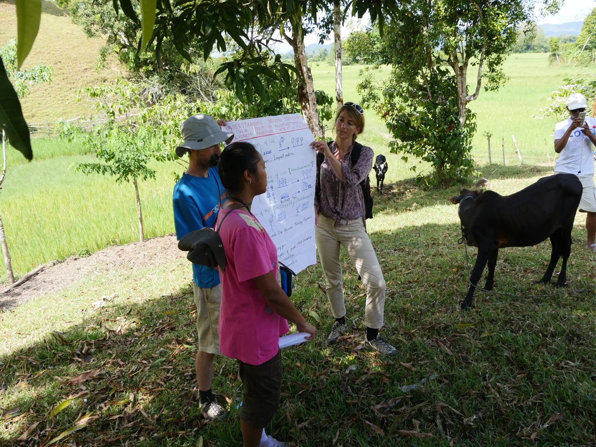
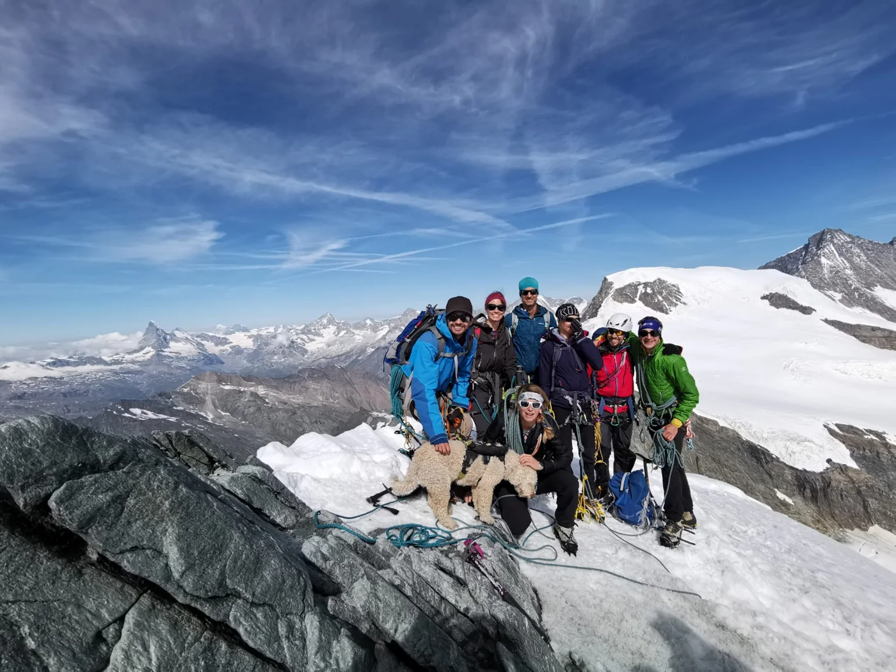
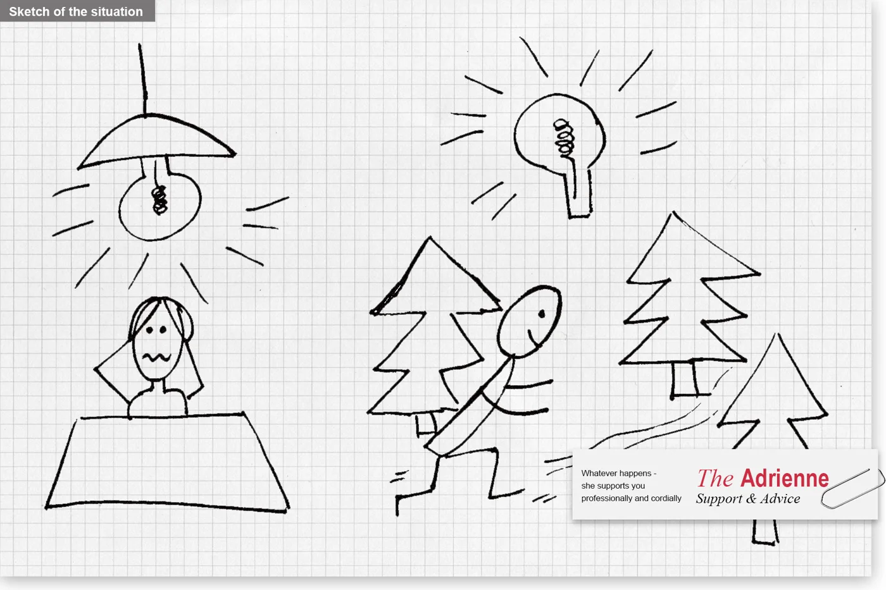
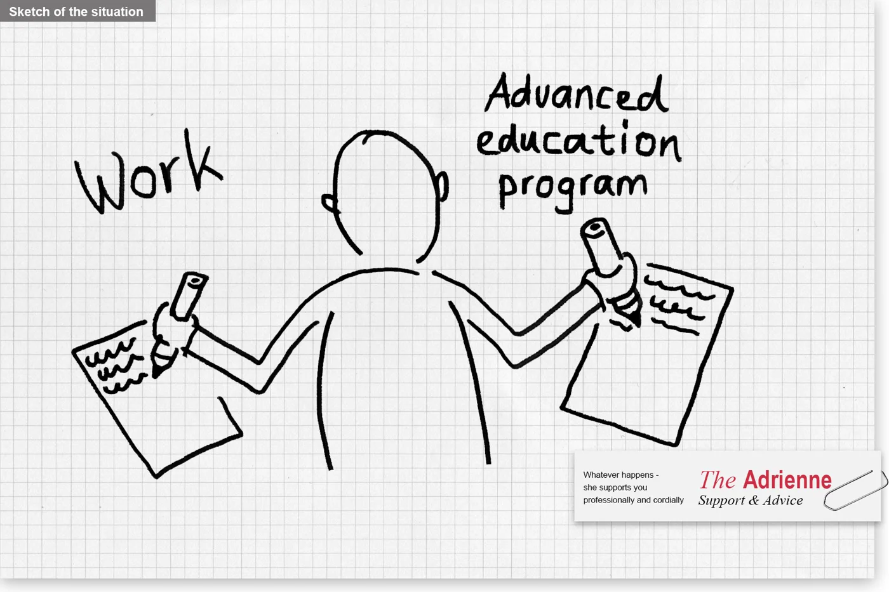
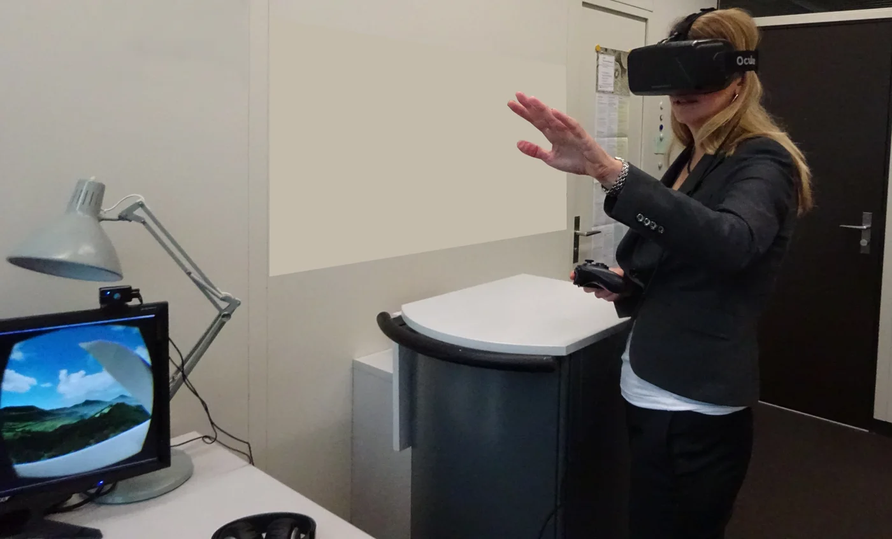
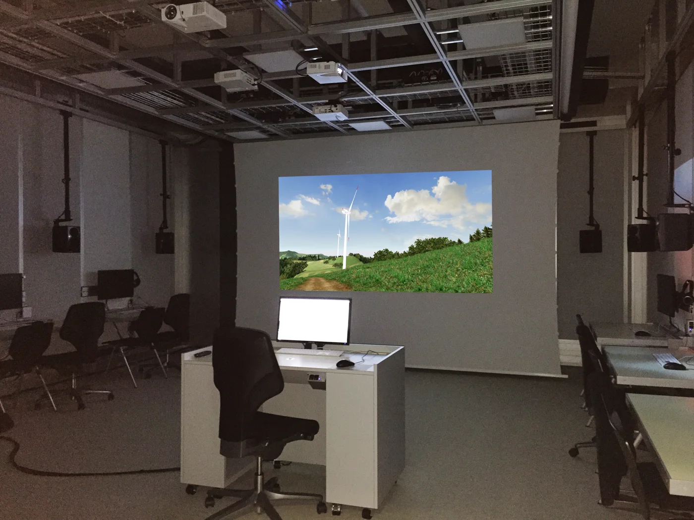

We Are Part of the Landscape: Prof. Adrienne Grêt-Regamey, Environmental Scientist

Prof. Grêt-Regamey conducting fieldwork in Madagascar.
As the Chair of Planning Landscape and Urban Systems (PLUS) at the Swiss Federal Institute of Technology (ETH), Prof. Adrienne Grêt-Regamey leads research into how humans shape landscapes, and vice versa. Earlier this month, Prof. Grêt-Regamey and coauthor Bettina Weibel published Global assessment of mountain ecosystem services using earth observation data in the journal Ecosystem Services. They wanted to understand how mountains, as “sensitive social-ecological systems” and “sentinels of global change,” provide insights into “the effects of land use and population change on ecosystem services across the world.”
Grêt-Regamey and Weibel (2020) confirmed their hypothesis that “mountains are hotspots of ecosystem services provision.” Lower-elevation mountains, however, are under great pressure from the growing population living in the lowlands. Demand for ecosystem services like food and water exceeds local availability in mountain ranges worldwide. Their results “highlight the need for action at global and local scales in terms of land use management.”
Prof. Grêt-Regamey aims to “understand how to secure the long-term functioning of such socio-ecological systems.” She compares landscape planning to a doctor advising a patient, suggesting positive interventions to ensure a healthier future. Like doctors, landscape planners must think holistically: as people, “we are part of the landscape,” not separate from it.

Prof. Grêt-Regamey with colleagues in the Swiss Alps.
After graduating from university in Switzerland, Prof. Grêt-Regamey worked in natural resource damage assessment in the United States. There, she witnessed shocking human impacts on the environment, from “mines changing the color of rivers” to birds dying en masse. Her desire to compensate for such injuries inspired her to obtain her own funding for her Ph.D. research on ecosystem services in mountainous areas.
Prof. Grêt-Regamey cites passion and endurance as the skills most critical to scientific success. Systems thinking and math are also important, as well as a willingness to learn and adapt. She encourages her students to “listen to themselves” and strives to create a supportive environment for them. In turn, her research group is her “biggest motivator.” She considers it an honor to collaborate with so many young, smart people. “Seeing students become colleagues” is one of the most rewarding parts of her work.


Sketches describing Prof. Grêt-Regamey’s management style for the Art of Leadership Award (ALEA) from ETH Zurich, for which she was a finalist in 2018: https://www.youtube.com/watch?v=sBpoG01kQn4&list=PLI5qMeij3ipPurLtH6SUSK8CT2eR99Lru&index=23.
Prof. Grêt-Regamey’s research group collects data creatively, e.g., using human body sensors to measure physical reactions to changes in virtual environments. They use drones and recording equipment to visualize and auralize landscapes. On the cognitive side, they collect data sensed passively (by smartphones and social networks, as opposed to by scientific instruments). Prof. Grêt-Regamey finds that “the acceptance of new infrastructures in the landscape is highly related to affective decisions.” The construction of a windfarm, for example, is not a straightforward energy issue, but a matter of “values, beliefs, and norms.”

Prof. Grêt-Regamey using a virtual reality (VR) headset to explore a virtual landscape.

A virtual landscape in Prof. Grêt-Regamey’s landscape visualization lab at ETH Zurich.
In future research, Prof. Grêt-Regamey will continue to explore the overlap between emotions and environment. She also wants to understand transformation of vulnerable landscapes towards sustainability, for example, of new spaces under growing land claims that result from diminishing snow and ice cover. For the field of landscape planning as a whole, she predicts a shift from “planning landscapes” to “considering landscapes as emerging.” Planners will have to create the right boundary conditions (constraints) within which sustainable landscape development can emerge. Making “important decisions related to land use and land management” will require “immense mutual trust between science and practice.” While “we are far from being there,” her research can help build this trust, like that among concerned doctors and motivated patients.
*Thank you to Prof. Adrienne Grêt-Regamey for sharing her story, and images, with 500WS Bern-Fribourg. Click here to read her recent paper.
From the 500 Women Scientists Bern-Fribourg archive. Originally published 25 January 2021.
Explore more stories